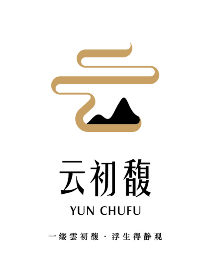

← 返回雲初馥

雲初馥 使用说明
拆解优秀公众号，蒸馏创作 Skills，做更好的自己
提取文章 → 拆解分析 → 生成报告 → 蒸馏 Skills
🎯 一、雲初馥是什么？
雲初馥是一款帮助用户拆解和学习优秀公众号的工具，最终蒸馏出一套完整的创作流程（Skills / 提示词）。
❌ 洗稿思维（传统做法）
找到一篇低粉爆款文章 → AI 提取主题和论点 → AI 二创 → 内容同质化
AI 味不可怕，可怕的是内容同质化。
✅ 雲初馥思维
以整个账号为维度 → 从 7 个维度深度拆解 → 蒸馏一套完整的创作流程
这套流程既是给 AI 的，也是给你的。用这套 Skills 和 AI 共创的同时，也是在提高自己的写作能力。
🔄 二、整体流程
STEP 1📥 提取文章
→
STEP 2🔬 AI 拆解
→
STEP 3📊 生成报告
→
STEP 4✨ 蒸馏 Skills
每一步都依赖上一步的结果，必须按顺序完成。
📥 三、第一步：提取文章
拆解一个账号，至少要提取 30 篇文章，50 篇最佳。文章数量越多，分析结果越准确。
⚠️
文章一定要是同一个方向的，比如都是情感的、都是育儿的、都是职场成长的等。不同方向混在一起，蒸馏出的 Skills 会不伦不类。
🔗 方式一：链接导入
- 切换到「链接导入」tab
- 在文本框中粘贴公众号文章链接，每行一个
- 可选填账号名称
- 点击「提取文章」
💡
微信文章链接获取方式：在微信里打开一篇文章 → 点击右上角工具条 → 复制链接
⚠️
链接导入仅保存 URL，文章正文需通过其他方式补充内容（因微信有反爬机制）。建议优先使用粘贴内容或Excel 导入。
📝 方式二：粘贴内容
- 切换到「粘贴内容」tab
- 输入文章标题
- 粘贴文章正文内容
- 可选填来源账号
- 点击「添加文章」
📚 方式三：批量导入
适合一次性导入多篇已整理好的文章。
- 切换到「批量导入」tab
- 按格式粘贴：标题与内容用
=== 分隔，文章之间用 ### 分隔
- 可选填来源账号
- 点击「批量导入」
格式示例：
文章标题1
===
文章正文内容1...
###
文章标题2
===
文章正文内容2...
📊 方式四：Excel 导入（推荐）
如果你的文章已经整理在 Excel 中，这是最高效的方式。
- 切换到「Excel导入」tab
- 点击「选择文件」，上传
.xlsx / .xls / .csv 文件
- 系统自动解析并预览前5行
- 映射列名：选择哪一列是标题、哪一列是正文内容（系统会自动识别含关键词的列名）
- 可选映射：来源账号列、文章链接列
- 点击「确认导入」
💡
Excel 列名不需要固定格式，系统会自动匹配包含"标题""正文""内容"等关键词的列。也可以手动下拉选择。
🔬 四、第二步：AI 七维度拆解
AI 会从 7 个深度维度 对每篇文章进行拆解分析：
💡 主题
核心立意与深层洞察，表面观点 vs 隐含意图
操作方式
- 切换到「AI 拆解」页面
- 点击「🚀 一键拆解全部」— 批量拆解所有未分析的文章
- 或点击单篇文章的「🔍 拆解」按钮 — 单独拆解感兴趣的文章
- 拆解进度实时显示，每篇文章预计 10-30 秒
- 拆解完成后可展开查看详细结果，不满意的可以重新拆解
📌
导出素材库：拆解完成后，点击「📊 导出素材库」可将所有拆解结果导出为 CSV 表格。写作最难的从来不是技巧，而是积累！这个表格不仅是数据，更是你的素材库。
📊 五、第三步：生成分析报告
基于所有拆解结果，AI 汇总生成该账号的完整分析报告，涵盖：
| 报告章节 | 内容 |
|---|
| 账号画像 | 内容定位、目标读者、核心竞争力、内容调性 |
| 选题规律 | 选题类型占比、周期性、可复制选题公式 |
| 标题策略 | 常用手法、高点击标题共性、10个标题模板 |
| 写作框架 | 最常用3种框架详解及详细模板 |
| 风格特征 | 语言风格画像、标志性表达、情绪曲线规律 |
| 素材使用 | 素材类型偏好、获取规律、素材库建议 |
| 金句创作 | 创作手法总结、5个金句模板、传播力分析 |
| 创作SOP建议 | 从选题到成稿的完整创作流程 |
- 切换到「分析报告」页面
- 点击「🧠 生成报告」
- 等待 AI 生成，预计 2~3 分钟
- 生成完成后可点击「📥 导出报告」下载为 Markdown 文件
✨ 六、第四步：蒸馏 Skills
将分析报告蒸馏为可复用的创作流程，输出两套版本：
|
📝 提示词版 |
📦 Skills 版 |
| 格式 |
单个 MD 文件 |
完整 SOP 目录（9个MD文件） |
| 使用方式 |
直接发给大模型对话框 |
安装到 AI Agent 或导入 IMA 知识库 |
| 适合用户 |
所有用户（最简单） |
有一定技术基础的用户 |
| 优点 |
使用简单，上手即用 |
流程稳定、出文质量高、AI 会自主优化提示词 |
| 缺点 |
内容过长时模型可能遗忘流程，需人工引导 |
使用门槛高，需要搭建 AI Agent 环境 |
| 推荐模型 |
豆包、GPT、DeepSeek 等 |
Claude Code、Codex、OpenClaw 等 |
- 切换到「蒸馏 Skills」页面
- 点击「🧪 开始蒸馏」
- 等待 AI 蒸馏，预计 2~3 分钟
- 蒸馏完成后可切换查看「提示词版」和「Skills版」
- 点击对应按钮下载
Skills 版的目录结构
📁 账号名-writing-sop/
📄 overview.md
📄 topic-selection.md
📄 title-crafting.md
📄 outline-building.md
📄 opening-writing.md
📄 body-writing.md
📄 golden-sentences.md
📄 style-guide.md
📄 review-polish.md
📝 七、提示词版使用方法
最简单 适合所有用户
- 在「蒸馏 Skills」页面，点击「📥 下载提示词版」
- 得到一份 MD 文件
- 将 MD 文件内容发送给大模型即可
- 有条件优先使用 Claude、GPT，没有条件就用智谱、豆包、DeepSeek 等
⚠️
注意事项：提示词版内容较长，大模型经常记不住，写着写着就不按照创作流程来了，需要人工引导。如果 AI 跑偏了，及时提醒它回到流程。
📚 八、Skills 版 · IMA 知识库用法
推荐小白 比提示词版稍复杂，但效果更好
原理：把 Skills 中的 MD 文件导入到 IMA 知识库，让 AI 在知识库上下文中执行创作流程。
- 下载 IMA 知识库应用
地址：https://ima.qq.com/download（推荐电脑版）
- 创建一个知识库
如命名为「雲初馥 Skills」
- 将 Skills 文件夹上传到知识库
进入知识库主页 → 点击右上角加号 → 选择本地文件夹 → 选择导出的 SOP 文件夹
- 在知识库中使用 Skills
进入 SOP 文件夹 → 选择模型 → 输入提示词：
请严格按照 skill.md 的流程，创作文章
⚠️
手机版注意：不能直接上传文件夹！需先手动创建对应文件夹，再进入该文件夹上传所有 MD 文件。
| 评价 | 说明 |
|---|
| 优点 | 操作相对简单，适合追求文章质量、能走心的小白用户 |
| 缺点 | 知识库不会根据需要及时更新 MD 中的提示词 |
🤖 九、Skills 版 · AI Agent 标准用法
有门槛 效果最好，但需要技术基础
Skills 的标准用法需要 AI Agent 环境，目前比较火的有：
🟣 OpenClaw
开源 AI Agent 工具，支持 Skills 插件
🟠 Claude Code
Anthropic 出品的 AI 编程工具
🔵 Codex
OpenAI 出品的 AI 编程工具
安装方法
把整个 SOP 文件夹复制到 AI Agent 的 Skills 目录下即可。
📁 AI-Agent/skills/
└── 📁 账号名-writing-sop/
├── 📄 overview.md
├── 📄 topic-selection.md
└── ...（共9个文件）
| 评价 | 说明 |
|---|
| 优点 | 执行流程稳定、出文质量相对较高、AI 会根据自己的需要优化提示词 |
| 缺点 | 使用门槛高，需要自行搭建和学习 AI Agent 环境 |
🔥
值得去折腾！标准用法的创作质量是三种方式中最高的。
💊 十、Skills 解决的创作痛点
Skills 不是让大家去洗稿的，而是帮助解决创作中的真实痛点：
不知道写什么
→ 用 Skills 学习优秀账号的选题
不知道怎么写
→ 用 Skills 学习优秀账号的框架
写完感觉没有深度
→ 用 Skills 教你写金句
发出去没有点击量
→ 用 Skills 帮你写标题
打开了但完读率低
→ 用 Skills 帮你设计情绪曲线
爆了一篇想承接流量
→ 用 Skills 帮你创作相同选题
🤖 十一、关于 AI 味
Skills 中有去 AI 味的步骤，但去除 AI 味不是单纯靠提示词就能解决的，和你使用的模型和调教过程有很大关系。
Skills 的重点不是去 AI 味，纠结 AI 味的小伙伴不建议使用。
💭
Skills 是给 AI 用的，更是提高你自己的。
拆解优秀账号，做更好的自己。这是雲初馥的初心！
❓ 十二、常见问题
❓ 启动报错 "EADDRINUSE: address already in use :::3210"
3210 端口已被占用，说明服务器已在运行。直接访问 http://localhost:3210 即可。如需重启：
netstat -ano | findstr :3210 → 找到 PID → taskkill /PID <PID号> /F → 重新 node server.js
❓ 连接 AI 失败 "Failed to fetch"
这是 CORS 跨域问题。确保通过 http://localhost:3210 访问（而非直接打开 HTML 文件），且代理服务器已启动（node server.js）。
❓ 小米 MiMo API 返回 404
API 地址必须填写完整路径：https://token-plan-cn.xiaomimimo.com/v1/chat/completions，不能只填到 /v1。模型名应为小写 mimo-v2.5-pro。点击「小米 MiMo」预设会自动填入正确配置。
❓ 链接导入的文章没有内容？
因微信有反爬机制，链接导入仅保存 URL，不会自动抓取正文。建议使用粘贴内容或Excel 导入方式添加文章正文。
❓ 拆解需要多长时间？
单篇文章拆解约 10-30 秒（取决于模型响应速度和文章长度）。50 篇文章一键拆解约 15-25 分钟。生成报告和蒸馏 Skills 各需 2-3 分钟。
❓ 支持哪些 AI 模型？
支持所有 OpenAI 兼容接口的模型。内置预设：DeepSeek、智谱 GLM、豆包、小米 MiMo、OpenAI。也可以手动填写其他兼容 API 的地址。
❓ 数据存在哪里？安全吗？
所有数据存在浏览器的 localStorage 中，不会上传到任何服务器。AI 分析时仅将文章内容发送给你配置的 API。建议定期使用「📦 导出全部数据」功能备份。
❓ Skills 导出后怎么用？
三种方式：
1️⃣ 提示词版：最简单，下载 MD 文件发给大模型即可
2️⃣ IMA 知识库：将 MD 文件上传到 IMA 知识库，在知识库中触发创作
3️⃣ AI Agent：将 SOP 文件夹放到 Skills 目录下，效果最好但需搭建环境
❓ Excel 导入支持什么格式？
支持 .xlsx、.xls、.csv 三种格式。Excel 至少需要包含「标题」和「正文内容」两列，列名可自定义，导入时会自动识别或手动映射。